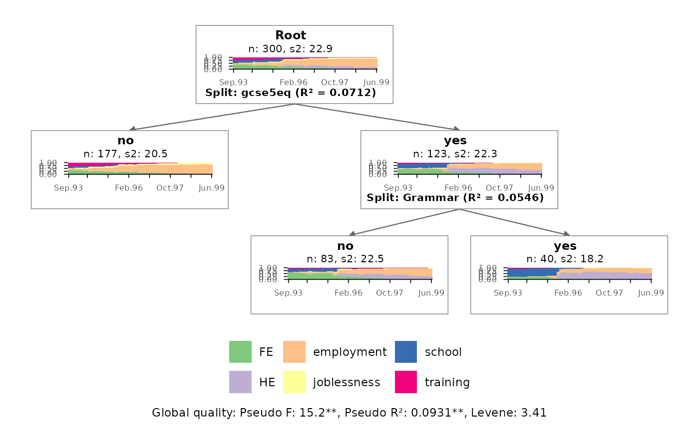
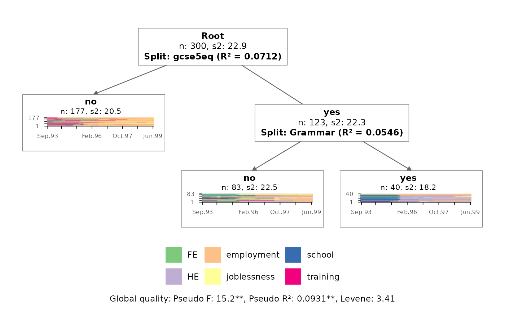
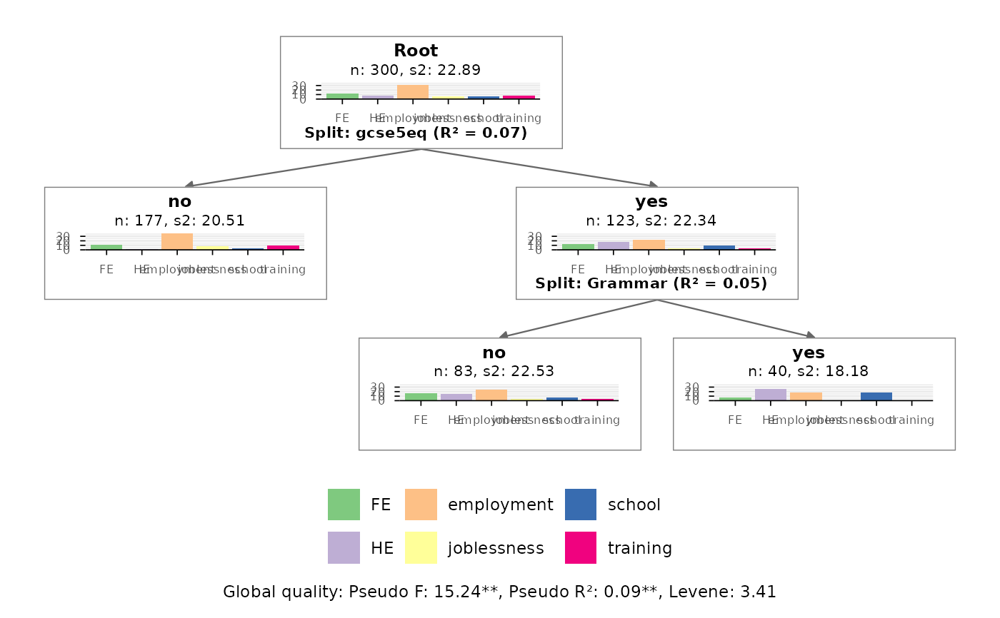
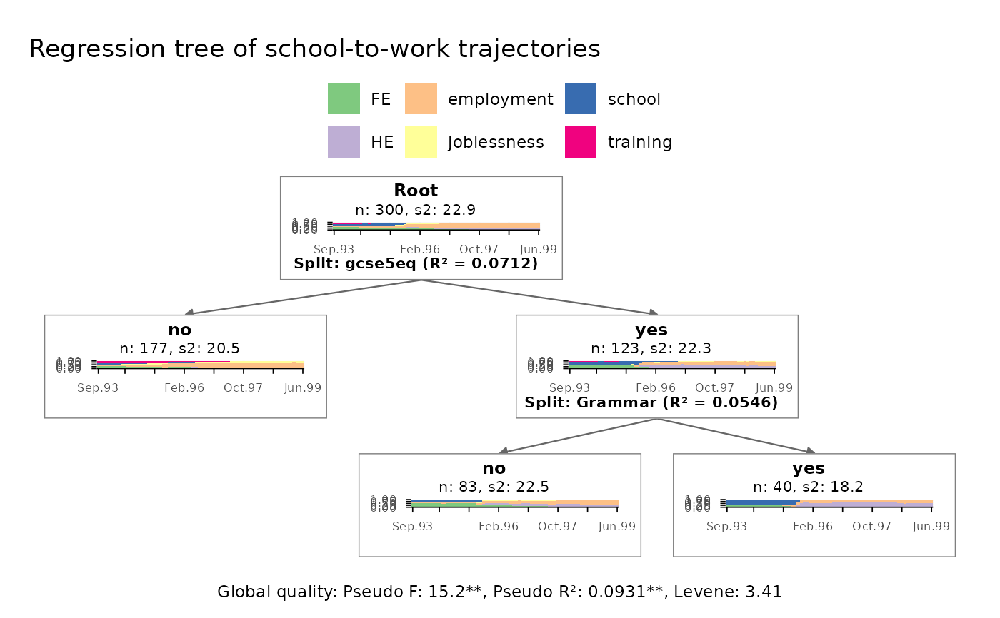
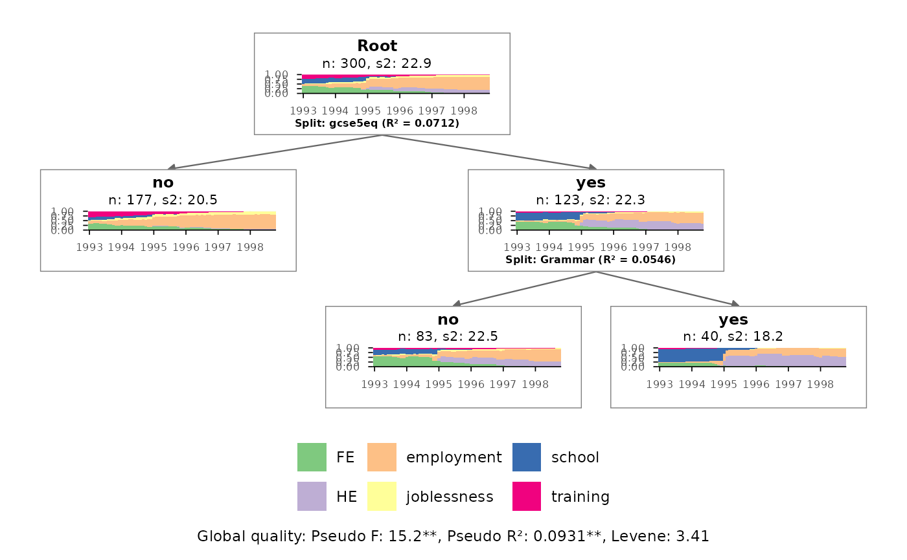
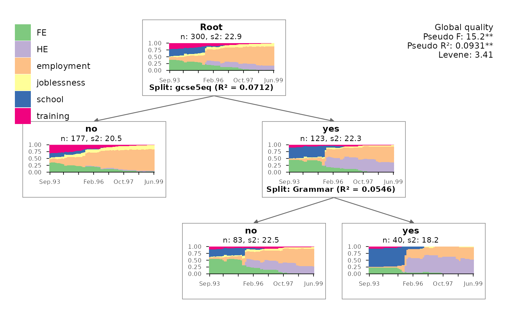

Function for rendering regression trees of sequences (obtained with
TraMineR::seqtree) with ggplot2
(Wickham 2016)
. The function re-produces the
tree plots rendered with TraMineR::seqtreedisplay
(Gabadinho et al. 2011; Studer et al. 2011)
without requiring an
installation of 'GraphViz'. Each node of the tree is displayed as a sequence
plot produced by one of the ggseq*plot functions of this package.
Usage
ggseqtreeplot(
tree,
seqdata = NULL,
type = "d",
only.leaf = FALSE,
with.legend = TRUE,
with.quality = TRUE,
quality.multiline = FALSE,
title.size = 9,
label.width = 30,
common.y = FALSE,
node.layers = NULL,
...
)Arguments
- tree
A regression tree of sequences (class
seqtree) created withTraMineR::seqtree. Trees of classdisstree(TraMineR::disstree) can be used ifseqdatais specified.- seqdata
State sequence object (class
stslist) created with theTraMineR::seqdeffunction. IfNULL(default) the sequence object stored in thetreeobject is used.- type
Type of the sequence plot shown in the nodes of the tree:
"d"for state distribution plots (default,ggseqdplot),"i"for index plots (ggseqiplot),"f"for sequence frequency plots (ggseqfplot),"ms"for modal state plots (ggseqmsplot), or"mt"for mean time plots (ggseqmtplot).- only.leaf
If
TRUEsequence plots are only shown for the terminal nodes (leaves) of the tree; the inner nodes are shown as text boxes. Default isFALSE.- with.legend
Specifies if a legend of the states is shown (default is
TRUE)- with.quality
Specifies if the global quality measures of the tree (Pseudo F, Pseudo R2, and Levene statistic) are shown below the tree (default is
TRUE). The measures are rendered as plot tag and can be moved (see Details).- quality.multiline
If
TRUEthe global quality measures are printed in separate lines instead of one line, which is useful if they are placed next to the root node (default isFALSE).- title.size
Font size of the node titles (split condition, n, s2, and next split variable); default is
9. Smaller values might be required for large trees.- label.width
Maximum number of characters per line for the split labels. Longer labels (e.g., splits over sets of factor levels) are wrapped. Default is
30.- common.y
If
TRUEall node plots share the same y-axis range, which eases the comparison of the nodes. Only used for mean time plots (type = "mt"); the y-axes of state distribution plots and modal state plots always range from 0 to 1. Default isFALSE.- node.layers
A ggplot component (e.g., a scale or a theme) or a list of ggplot components that is added to each of the node plots, e.g.,
list(scale_x_discrete(labels = ...), theme(plot.caption = element_text(size = 6))). The components are added after the default layout of the node plots and therefore overwrite it. Default isNULL.- ...
additional arguments passed on to the plot function specified with
type(e.g.border = TRUEorsortv = "from.start"for index plots). Ifsortvis a vector (of the same length as the sequence data), it is subsetted for each node.
Value
A tree plot created by using ggplot2. If stored as
object the resulting list object (of class gg and ggplot) also contains the
data describing the nodes of the tree (position, label, n, discrepancy,
split variable, and the indices of the cases in each node).
Details
The function walks through the tree object generated by
TraMineR::seqtree and stores the information
of each node in a data frame. Like in
TraMineR::seqtreedisplay each node shows
the split condition (or "Root"), the number of (weighted) cases (n), the
discrepancy of the sequences within the node (s2), and – for inner nodes –
the variable used for the next split along with its R2.
The positions of the nodes are computed with a simple algorithm: the terminal nodes (leaves) are placed next to each other from left to right, and every inner node is centered above its two child nodes. The vertical position reflects the depth of a node.
For each node a sequence plot is generated by calling the function
specified with type on the respective subset of the sequence data.
The resulting plots are placed on an empty plot ("canvas") using
ggplot2::annotation_custom. The
edges of the tree are drawn with ggplot2::geom_segment.
Axis titles and legends of the node plots are removed. Instead, a common
legend for the whole tree is shown at the bottom of the plot.
Note that the node plots are drawn as images on the canvas. Therefore, the
appearance of the node plots cannot be changed afterwards using +.
Instead, scales, themes, or other ggplot components that should be applied to
all node plots can be specified with the node.layers argument.
The overall plot (title, legend, ...), however, can be
adjusted just like any other ggplot (e.g., + labs(title = "My tree")).
The global quality measures are rendered as plot tag. Their position can be
changed with theme(plot.tag.position = ..., plot.tag.location = "panel")
(see examples). The legend can be moved with theme(legend.position = ...)
and rearranged with guides(fill = guide_legend(...)).
For large trees, it is recommended to save the plot with a large size, e.g. by using
ggplot2::ggsave with appropriate width and
height values.
References
Gabadinho A, Ritschard G, Müller NS, Studer M (2011).
“Analyzing and Visualizing State Sequences in R with TraMineR.”
Journal of Statistical Software, 40(4), 1–37.
doi:10.18637/jss.v040.i04
.
Studer M, Ritschard G, Gabadinho A, Müller NS (2011).
“Discrepancy Analysis of State Sequences.”
Sociological Methods & Research, 40(3), 471–510.
doi:10.1177/0049124111415372
.
Wickham H (2016).
ggplot2: Elegant Graphics for Data Analysis, Use R!, 2nd ed. edition.
Springer, Cham.
doi:10.1007/978-3-319-24277-4
.
Examples
library(TraMineR)
library(ggplot2)
# Use example data from TraMineR: mvad data set
data(mvad)
# We use only a sample of 300 cases
set.seed(1)
mvad <- mvad[sample(nrow(mvad), 300), ]
mvad.seq <- seqdef(mvad[, 17:86], xtstep = 6)
#> [>] 6 distinct states appear in the data:
#> 1 = FE
#> 2 = HE
#> 3 = employment
#> 4 = joblessness
#> 5 = school
#> 6 = training
#> [>] state coding:
#> [alphabet] [label] [long label]
#> 1 FE FE FE
#> 2 HE HE HE
#> 3 employment employment employment
#> 4 joblessness joblessness joblessness
#> 5 school school school
#> 6 training training training
#> [>] 300 sequences in the data set
#> [>] min/max sequence length: 70/70
# Compute dissimilarities and grow the regression tree
mvad.diss <- seqdist(mvad.seq, method = "HAM")
#> [>] 300 sequences with 6 distinct states
#> [>] creating a 'sm' with a single substitution cost of 1
#> [>] creating 6x6 substitution-cost matrix using 1 as constant value
#> [>] checking 'sm' (size and triangle inequality)
#> [>] 227 distinct sequences
#> [>] min/max sequence lengths: 70/70
#> [>] computing distances using the HAM metric
#> [>] elapsed time: 0.047 secs
mvad.tree <- seqtree(mvad.seq ~ male + Grammar + funemp + gcse5eq,
data = mvad, diss = mvad.diss, R = 100, max.depth = 3)
# Tree with state distribution plots
# (similar to TraMineR::seqtreedisplay, which requires GraphViz)
ggseqtreeplot(mvad.tree)

# \donttest{
# Tree with index plots (only shown for the terminal nodes)
ggseqtreeplot(mvad.tree, type = "i", only.leaf = TRUE)

# Tree with mean time plots using a common y-axis for all nodes
ggseqtreeplot(mvad.tree, type = "mt", common.y = TRUE)

# make use of ggplot functions for modifying the plot
ggseqtreeplot(mvad.tree) +
labs(title = "Regression tree of school-to-work trajectories") +
theme(legend.position = "top")

# adjust all node plots: x-axis labels and size of split information
ggseqtreeplot(mvad.tree,
node.layers = list(
scale_x_discrete(breaks = c(1, 13, 25, 37, 49, 61),
labels = 1993:1998),
theme(plot.caption = element_text(size = 6))
))

# layout similar to TraMineR::seqtreedisplay: legend in the upper left
# and global quality in the upper right corner
ggseqtreeplot(mvad.tree, quality.multiline = TRUE) +
theme(plot.tag.location = "panel",
plot.tag.position = c(1, 1),
plot.tag = element_text(hjust = 1, vjust = 1),
legend.position = "inside",
legend.position.inside = c(0, 1),
legend.justification = c(0, 1),
legend.direction = "vertical")

# }